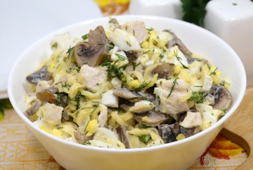

Главная страница
Салат с жареными шампиньонами

Описание
Яркий и сытный салат, который украсит не только любой праздничный стол, но и повседневный ужин. Курица и шампиньоны создают гармонию вкуса, а тертый сыр добавляет нежности и пикантности. Простота и время приготовления, доступные ингредиенты — его главные преимущества.
Ингредиенты
- Куриное филе 200 г
- Шампиньоны свежие 150 г
- Любимый твердый сыр 100 г
- Яйца 3 шт.
- Масло подсолнечное 2 ст. л.
- Майонез 2 ст. л.
- Зелень укропа по вкусу
- Соль по вкусу
Приготовление
- Чтобы приготовить салат с жареными шампиньонами, курицей и сыром, нужно куриное филе отварить 15-20 минут на среднем огне. Остудить куриное филе в бульоне.
- 150 грамм свежих шампиньонов нарезать кусочками.
- На сухой сковороде обжарить грибы шампиньоны помешивая 2-3 минуты.
- Добавить в сковороду к грибам 2 столовые ложки подсолнечного масла и готовить еще 4-5 минут.
- Три яйца отварить, остудить и очистить.
- Куриное филе нарезать небольшими кубиками.
- 100 гамм любимого твердого сыра натереть на крупной терке.
- В миске смешать куриное филе, обжаренные грибы шампиньоны.
- Добавить кубиками нарезанные отварные яйца и тертый сыр.
- Добавить мелко нашинкованный укроп и 2 столовые ложки майонеза, посолить по вкусу.
- Перемешать и выложить салат с жареными шампиньонами в салатник.
- Наш очень вкусный салат с жареными шампиньонами, курицей и сыром готов. Можно подавать к столу.
Приятного аппетита!